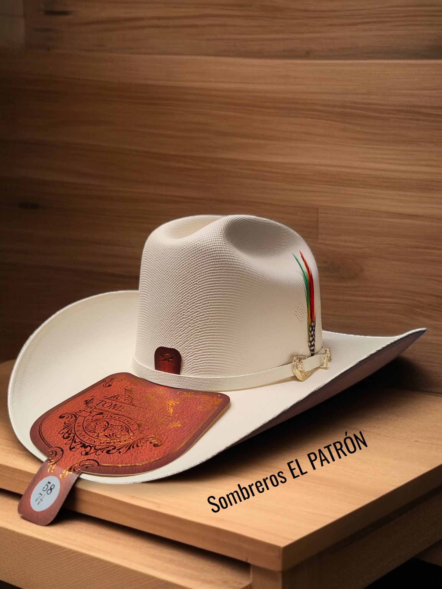
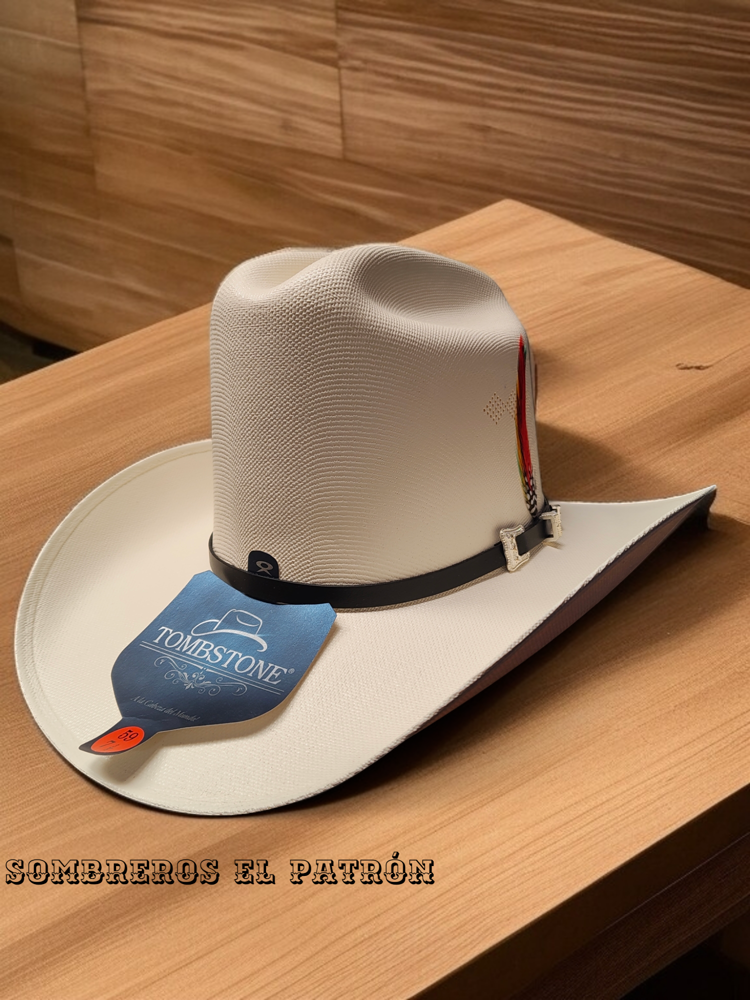
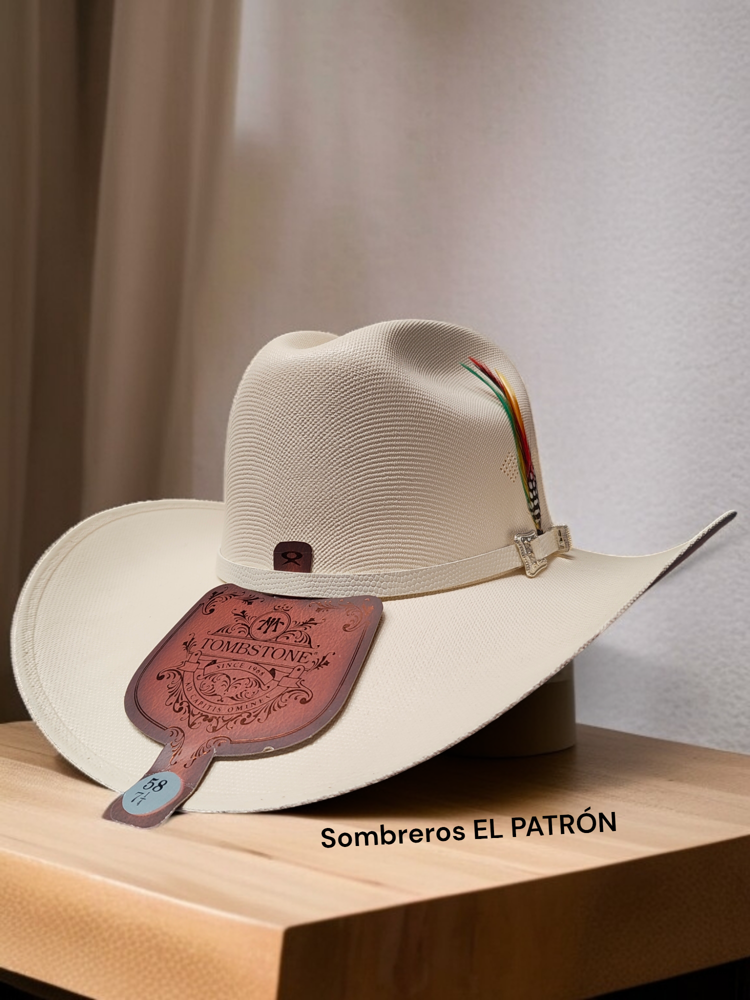
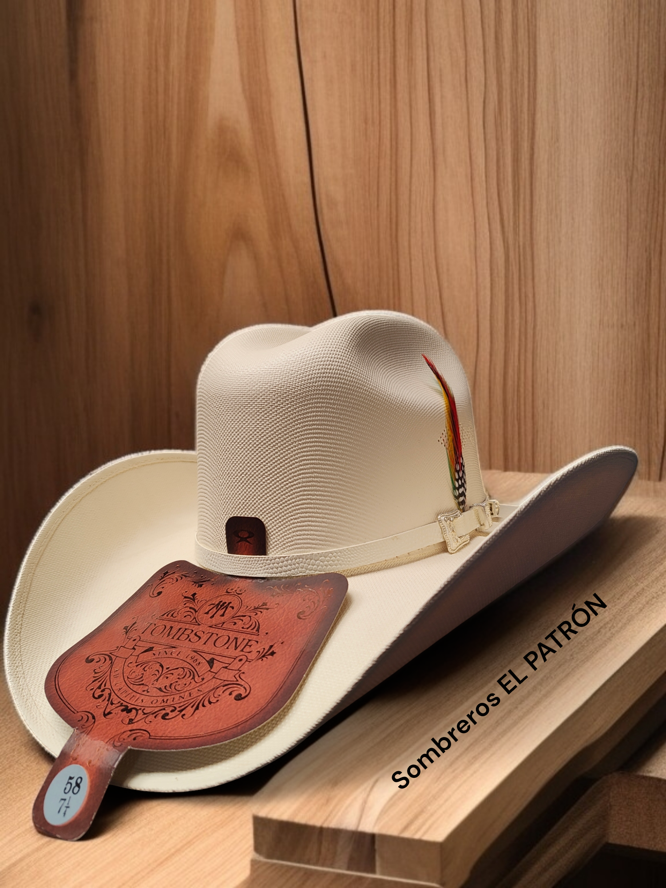
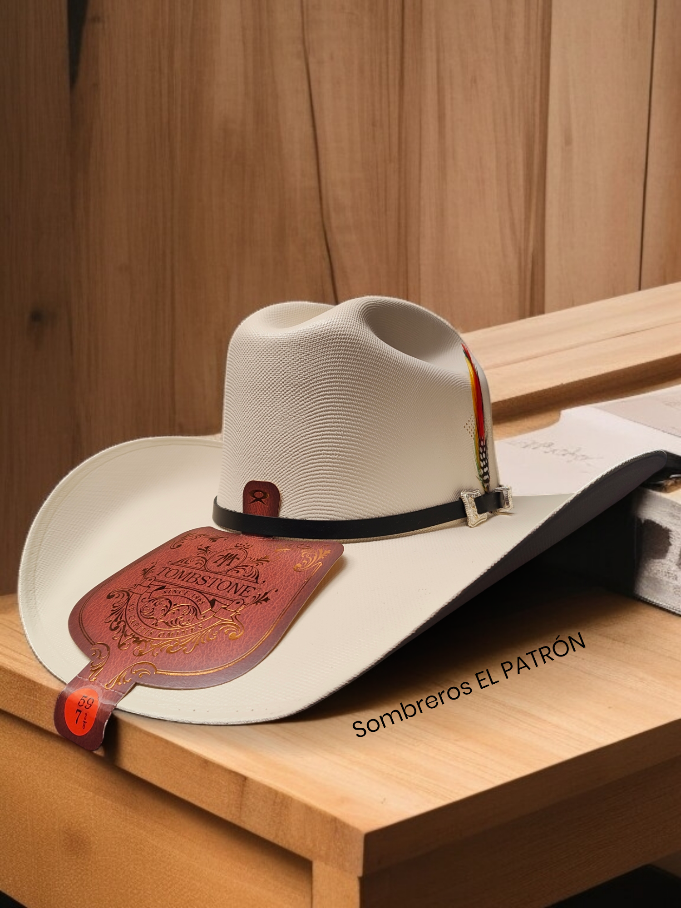

Bienvenido a nuestro catálogo en línea. Usa el menú para explorar sombreros y texanas para caballero, dama y niño.
Tombstone 1000X Chaparral
El Tombstone 1000X Chaparral es un sombrero de copa media (≈4¼″) y ala ancha (≈3½″), hecho con telar master 1x1 y detalle de pluma. Elegante y ventilado, ofrece estilo y comodidad en cualquier clima.
Tombstone 1000X El Viejón
El 1000X El Viejón mantiene la misma calidad master 1x1, con copa media y ala definida. Destaca por su diseño clásico y refinado, ideal para quienes buscan un estilo tradicional pero con carácter.
Tombstone 1000X Denver
El modelo Denver es un sombrero de ala ligeramente más corta (≈3¾″) y copa más baja (≈4¼″), hecho a mano en México con master telar. Ideal para uso diario y looks urbanos.
Tombstone 1000X Este‑Oeste
El modelo Este‑Oeste combina la calidad 1000X con un ala de tamaño mediano y diseño versátil, perfecto para montar o acompañar atuendos de ranchera y ciudad.
Tombstone 1000X Roper
El Roper 1000X ofrece ala moderada y copa cómoda, ideal para estilos informales o cabalgatas. Su construcción robusta resiste el uso rudo sin perder elegancia.